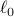
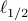
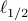
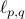

Yaohua Hu - Software
Matlab
LpRGNI (Lp Regularization for Gene Network Inference)
- An Matlab tool for predicting gene regulatory network by using the LASSO-type estimators, including the , and  regularization models, and from both high-throughput gene expression data and transcription factor.
and  regularization models, and from both high-throughput gene expression data and transcription factor.
- Reference:J. Qin, Y. Hu, F. Xu, H. K. Yalamanchili and J. Wang, Inferring gene regulatory networks by integrating ChIP-seq/chip and transcriptome data via LASSO-type regularization methods, Methods, 67: 294-303, 2014. [link]
R
GSparO (Group Sparse Optimization)
- An R pacakage for solving the  regularization of group sparse optimization problem by implementing the proximal gradient algorithm.
- Reference:Y. Hu, C. Li, K. Meng, J. Qin and X. Yang, Group sparse optimization via regularization, Journal of Machine Learning Research, 18(30): 1-52, 2017. [link]
Webserver
CrusTF (Crustacean Transcription Factors)
- A comprehensive resource for evolutionary and functional studies of crustacean transcription factors.
- Reference:J. Qin, Y. Hu, K. Ma, X. Jiang, C. Ho, L. Tsang, L. Yi and K. Chu, CrusTF: A comprehensive resource for evolutionary and functional studies of crustacean transcription factors, BMC Genomics, 18(1): 908, 2017. [link]